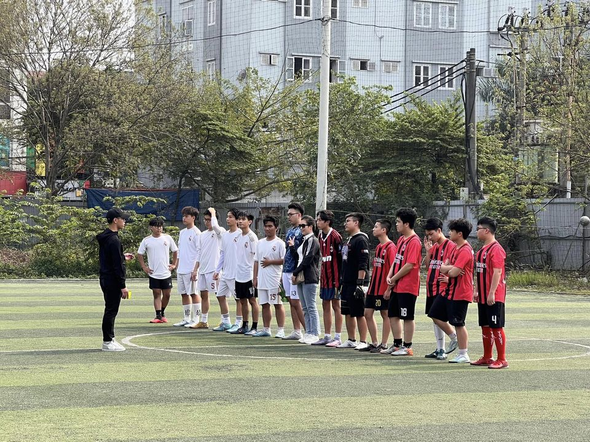
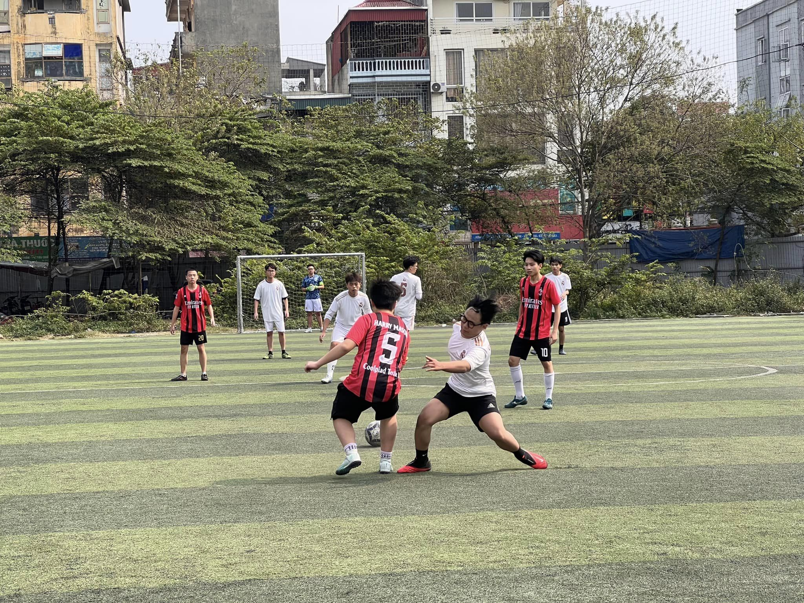

FT: FC Boé 0-0 FC Nhật Trang
Trận đấu thứ 1 trong khuôn khổ vòng bảng HSGS cup.

_Căng thẳng, nhịp độ cao, tiểu xảo và phạm lỗi là những từ ngữ được dành cho trận đấu này
Tuyên dương: Mon thủ tốt, Tài tạo ra nhiều cơ hội nguy hiểm, Núi năng nổ chạy,..
[RECAP]:
Trong hiệp đấu đầu tiên, với sự có mặt kịp thời của Tài, FC ta nhanh chóng kiểm soát được bóng và có nhiều cú sút nguy hiểm về phía khung thành đội bạn nhưng chưa chuyển hoá được thành bàn thắng.
Bước sang hiệp đấu thứ hai, Tài đã không thể tham gia tiếp với FC ta nên ở khâu tấn công, Fc có ít khả năng lên bóng nhưng đã có nhiều va chạm xảy ra. Trận đấu kết thúc và điểm được chia đều cho 2 bên.

Click để về trang trước